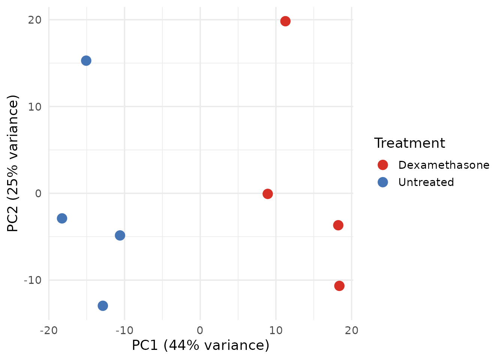
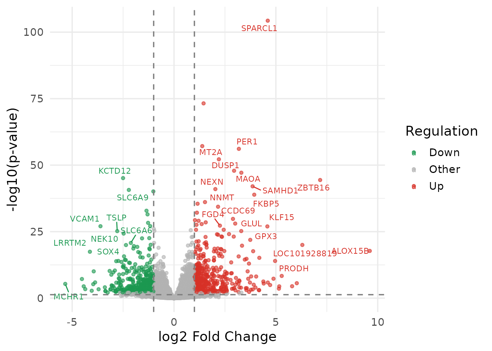
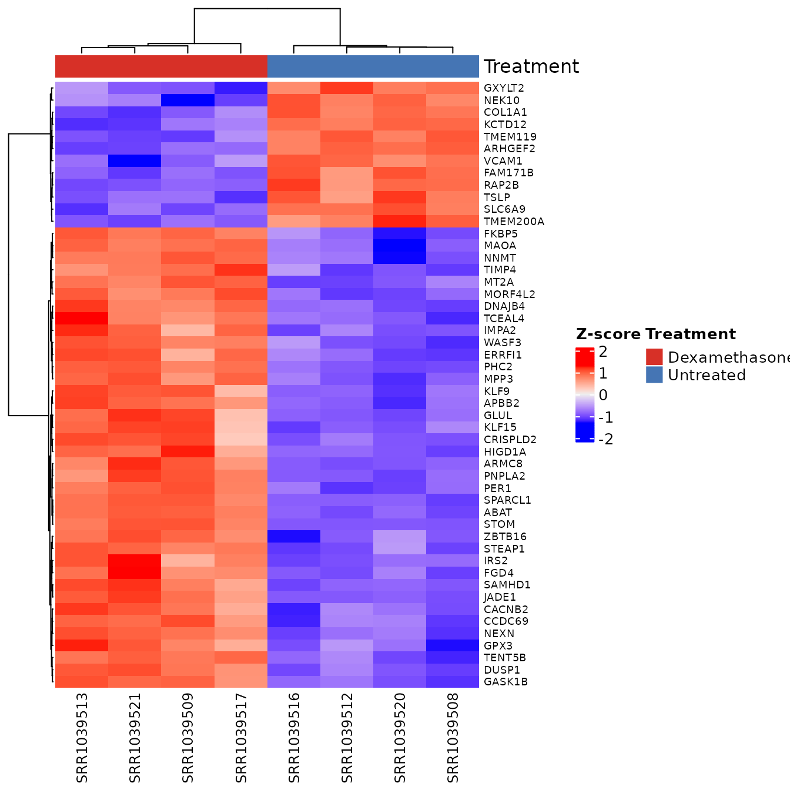
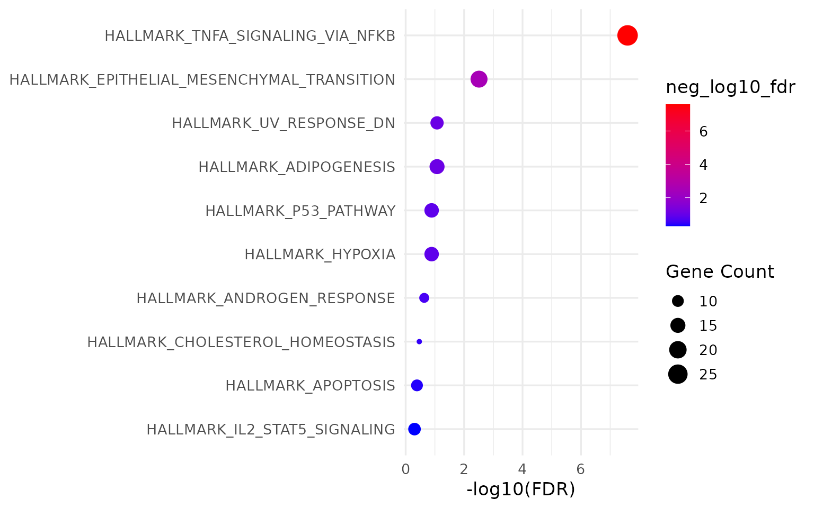
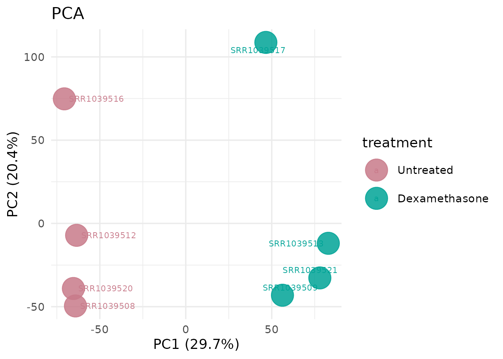
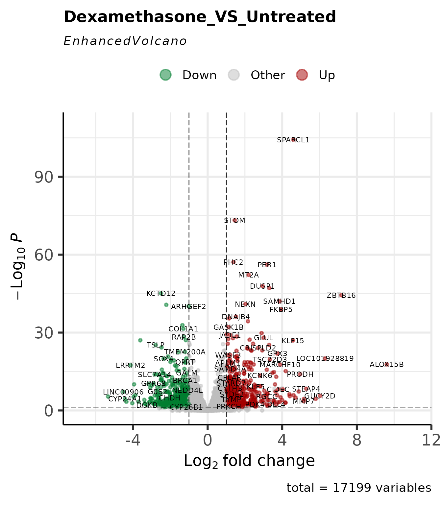
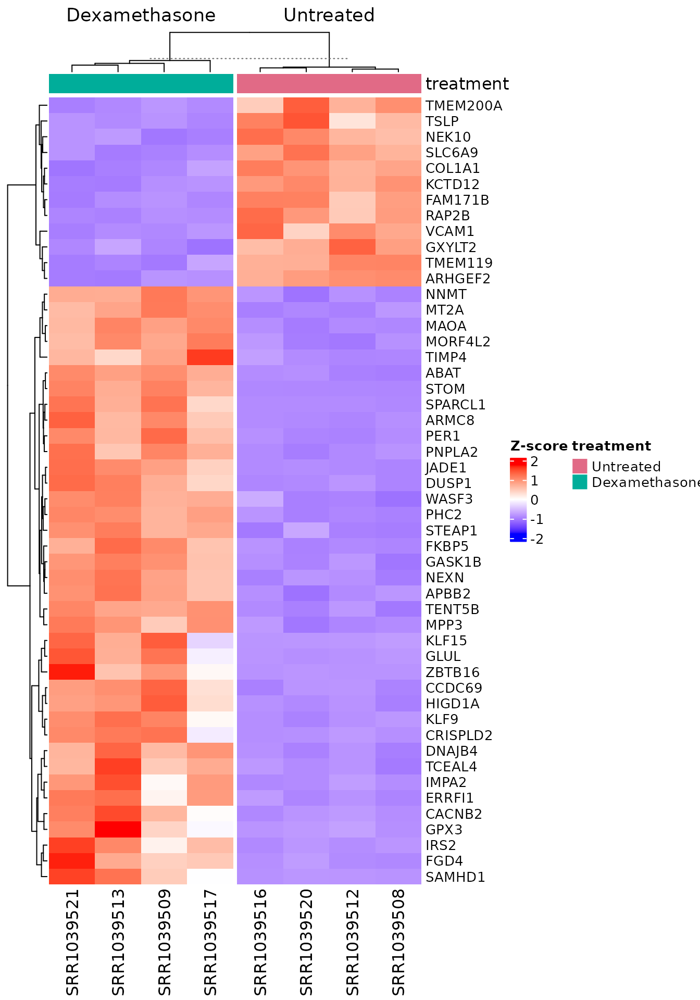
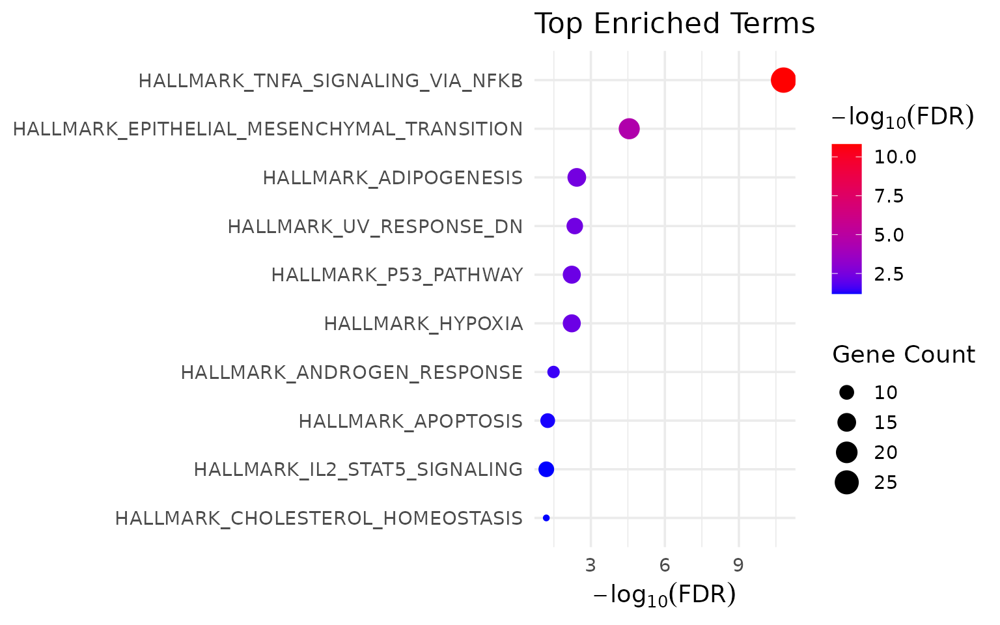
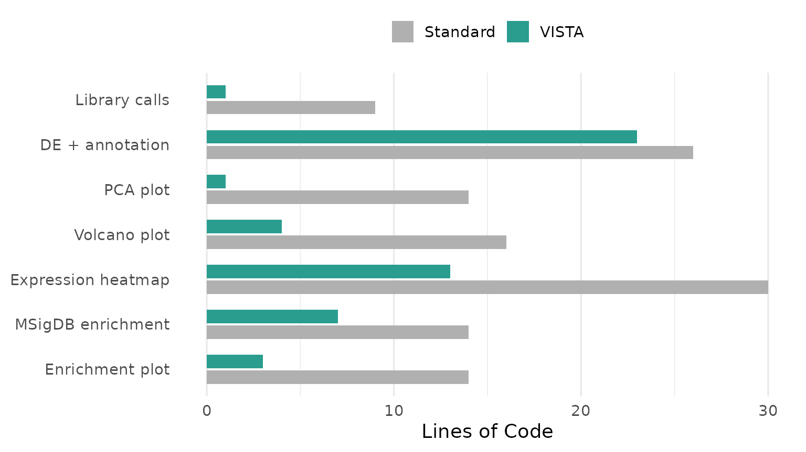

Code Economy: VISTA vs. Standard R Workflows
VISTA Development Team
Source:vignettes/workflows/VISTA-code-economy.Rmd
VISTA-code-economy.RmdMotivation
A standard RNA-seq differential expression analysis – from raw counts to publication-ready figures and enrichment results – requires assembling 6–10 packages, each with its own data structures, naming conventions, and implicit assumptions. The user is responsible for:
-
Data plumbing: converting between
DESeqDataSet,DGEList, data frames, matrices, and tibbles at every interface boundary - Identifier management: gene IDs must be stripped, mapped, and re-mapped at each stage (DE, annotation, enrichment, visualisation)
- State tracking: cutoffs, method settings, comparison names, and color schemes are scattered across script variables with no structured persistence
- Visual consistency: colours, axis labels, and themes must be manually coordinated across dozens of ggplot2 calls
None of these steps involve scientific reasoning. They are engineering overhead. VISTA eliminates them.
This vignette makes that claim concrete: we perform the same analysis twice on the same data – once with standard packages, once with VISTA – and measure the difference.
Data
We use the airway dataset (Himes et al. 2014): 8 samples of human airway smooth muscle cells, 4 treated with dexamethasone, 4 untreated.
Workflow A: Standard Packages
The code below uses only established Bioconductor and CRAN packages – DESeq2, ggplot2, ComplexHeatmap, clusterProfiler, msigdbr, and AnnotationDbi. This is representative of real analysis scripts found in published supplementary materials.
library(DESeq2)
library(ggplot2)
library(ggrepel)
library(dplyr)
library(tibble)
library(clusterProfiler)
library(msigdbr)
library(AnnotationDbi)
library(org.Hs.eg.db)9 library calls before a single line of analysis.
Step 1: Differential Expression (Standard)
# Build DESeqDataSet
dds <- DESeqDataSetFromMatrix(
countData = counts_matrix,
colData = sample_meta,
design = ~ treatment
)
# Filter low-count genes
keep <- rowSums(counts(dds) >= 10) >= 2
dds <- dds[keep, ]
# Run DE pipeline
dds <- DESeq(dds)
# Extract results
res <- results(dds, contrast = c("treatment", "Dexamethasone", "Untreated"))
res_df <- as.data.frame(res) %>%
rownames_to_column("gene_id") %>%
mutate(
regulation = case_when(
log2FoldChange >= 1 & padj < 0.05 ~ "Up",
log2FoldChange <= -1 & padj < 0.05 ~ "Down",
TRUE ~ "Other"
)
)
# Get normalized counts for downstream plots
norm_mat <- counts(dds, normalized = TRUE)18 lines. The user must know:
DESeqDataSetFromMatrix, formula syntax, manual filtering
logic, results() contrast specification, fold-change and
p-value cutoff application, and regulation classification.
Step 2: Gene Annotation (Standard)
# Map Ensembl IDs to gene symbols
gene_symbols <- mapIds(
org.Hs.eg.db,
keys = res_df$gene_id,
keytype = "ENSEMBL",
column = "SYMBOL",
multiVals = "first"
)
res_df$SYMBOL <- gene_symbols[res_df$gene_id]8 lines. The user must handle mapIds(),
know the correct keytype, and deal with multi-mapping.
Step 3: PCA Plot (Standard)
# Variance-stabilising transform
vsd <- vst(dds, blind = FALSE)
# Extract PCA data
pca_data <- plotPCA(vsd, intgroup = "treatment", returnData = TRUE)
pct_var <- round(100 * attr(pca_data, "percentVar"))
# Build ggplot manually
ggplot(pca_data, aes(x = PC1, y = PC2, color = treatment)) +
geom_point(size = 4) +
labs(
x = paste0("PC1 (", pct_var[1], "% variance)"),
y = paste0("PC2 (", pct_var[2], "% variance)"),
color = "Treatment"
) +
scale_color_manual(values = c("Untreated" = "#4575B4", "Dexamethasone" = "#D73027")) +
theme_minimal(base_size = 14)
14 lines. The user must know: vst(),
plotPCA() with returnData, how to extract
percent variance from attributes, manual ggplot2 construction, and
hardcoded colour assignment.
Step 4: Volcano Plot (Standard)
volcano_df <- res_df %>%
mutate(
neg_log10_p = -log10(pvalue),
label = ifelse(
abs(log2FoldChange) > 2 & padj < 0.01 & !is.na(SYMBOL),
SYMBOL, ""
)
)
ggplot(volcano_df, aes(x = log2FoldChange, y = neg_log10_p, color = regulation)) +
geom_point(alpha = 0.6, size = 1.2) +
geom_text_repel(aes(label = label), size = 3, max.overlaps = 15) +
geom_vline(xintercept = c(-1, 1), linetype = "dashed", color = "grey50") +
geom_hline(yintercept = -log10(0.05), linetype = "dashed", color = "grey50") +
scale_color_manual(values = c(Up = "#D73027", Down = "#1A9850", Other = "grey70")) +
labs(x = "log2 Fold Change", y = "-log10(p-value)", color = "Regulation") +
theme_minimal(base_size = 14)
16 lines. Manual data preparation, manual label logic, manual threshold lines, manual colour mapping.
Step 5: Expression Heatmap (Standard)
if (requireNamespace("ComplexHeatmap", quietly = TRUE)) {
library(ComplexHeatmap)
library(circlize)
# Select top DE genes
top_genes <- res_df %>%
filter(regulation != "Other") %>%
arrange(padj) %>%
head(50) %>%
pull(gene_id)
# Z-score transform
mat <- norm_mat[top_genes, ]
mat_z <- t(scale(t(log2(mat + 1))))
# Column annotation
col_ann <- HeatmapAnnotation(
Treatment = sample_meta$treatment,
col = list(Treatment = c("Untreated" = "#4575B4", "Dexamethasone" = "#D73027"))
)
# Map gene symbols for labels
row_labels <- ifelse(
!is.na(gene_symbols[top_genes]),
gene_symbols[top_genes],
top_genes
)
Heatmap(
mat_z,
name = "Z-score",
top_annotation = col_ann,
row_labels = row_labels,
show_row_names = TRUE,
row_names_gp = gpar(fontsize = 7),
column_names_gp = gpar(fontsize = 9),
clustering_distance_rows = "euclidean",
clustering_method_rows = "ward.D2"
)
}
30 lines. The user must: load 2 more packages,
manually select top genes, compute z-scores, construct
HeatmapAnnotation with manually repeated colours, map gene
symbols for row labels, and configure Heatmap() with 8
parameters.
Step 6: MSigDB Enrichment (Standard)
# Get upregulated gene symbols
up_genes <- res_df %>%
filter(regulation == "Up", !is.na(SYMBOL)) %>%
pull(SYMBOL) %>%
unique()
# Fetch Hallmark gene sets
hallmark_sets <- msigdbr(species = "Homo sapiens", category = "H")
hallmark_t2g <- hallmark_sets[, c("gs_name", "gene_symbol")]
# Run enrichment
enrich_result <- enricher(
gene = up_genes,
TERM2GENE = hallmark_t2g,
pvalueCutoff = 0.05,
qvalueCutoff = 0.2
)14 lines. The user must: filter and extract gene
symbols manually, know the msigdbr column names, construct the TERM2GENE
data frame, and call enricher() with correct
parameters.
Step 7: Enrichment Plot (Standard)
if (!is.null(enrich_result) && nrow(enrich_result@result) > 0) {
enrich_df <- enrich_result@result %>%
arrange(p.adjust) %>%
head(10) %>%
mutate(
Description = forcats::fct_reorder(Description, -log10(p.adjust)),
neg_log10_fdr = -log10(p.adjust)
)
ggplot(enrich_df, aes(x = neg_log10_fdr, y = Description)) +
geom_point(aes(size = Count, color = neg_log10_fdr)) +
scale_color_gradient(low = "blue", high = "red") +
labs(x = "-log10(FDR)", y = NULL, size = "Gene Count") +
theme_minimal(base_size = 13)
}
14 lines. Manual slot extraction, manual factor reordering, manual ggplot2 construction.
Standard Workflow: Summary
knitr::kable(
standard_counts[, c("Step", "Lines", "Packages")],
caption = paste0("Standard workflow: ", total_std, " lines, ", total_pkg, " packages"),
align = c("l", "r", "r")
)| Step | Lines | Packages |
|---|---|---|
| Library calls | 9 | 9 |
| Differential expression | 18 | 0 |
| Gene annotation | 8 | 0 |
| PCA plot | 14 | 0 |
| Volcano plot | 16 | 0 |
| Expression heatmap | 30 | 2 |
| MSigDB enrichment | 14 | 0 |
| Enrichment plot | 14 | 0 |
Total: 123 lines of code, 11 packages loaded.
Additional cognitive costs not captured in line count:
- 5 data structure conversions (matrix -> DESeqDataSet -> results -> data.frame -> filtered subset)
- 2 manual ID mappings (Ensembl -> Symbol for annotation and enrichment)
- 3 hardcoded color vectors (one per plot type, manually kept consistent)
- 0 structured persistence (all state lives in script variables)
Workflow B: VISTA
The same analysis, same data, same outputs.
1 library call.
Steps 1–2: Differential Expression + Annotation
# Prepare inputs (same as standard workflow)
count_data <- as.data.frame(counts_matrix) %>%
tibble::as_tibble() %>%
mutate(gene_id = rownames(counts_matrix)) %>%
select(gene_id, everything())
sample_info <- sample_meta %>%
tibble::as_tibble() %>%
rename(sample_names = Run) %>%
mutate(sample_names = as.character(sample_names))
# One call: DE + filtering + normalization + regulation classification
vista <- create_vista(
counts = count_data,
sample_info = sample_info,
column_geneid = "gene_id",
group_column = "treatment",
group_numerator = "Dexamethasone",
group_denominator = "Untreated",
method = "deseq2",
min_counts = 10,
min_replicates = 2,
log2fc_cutoff = 1.0,
pval_cutoff = 0.05,
p_value_type = "padj"
)
# One call: gene annotation
vista <- set_rowdata(
vista,
orgdb = org.Hs.eg.db,
columns = c("SYMBOL", "GENENAME", "ENTREZID"),
keytype = "ENSEMBL"
)23 lines (including data preparation shared with both workflows).
create_vista() performed: count filtering, DESeq2
pipeline execution, normalized count extraction, fold-change/p-value
thresholding, regulation classification, colour palette assignment, and
metadata persistence – in one call. set_rowdata() handled
all ID mapping.
Step 3: PCA Plot
get_pca_plot(vista, label = TRUE)
1 line. Colors are inherited from the VISTA object. Axis labels with variance percentages are generated automatically.
Step 4: Volcano Plot
get_volcano_plot(
vista,
sample_comparison = names(comparisons(vista))[1],
display_id = "SYMBOL"
)
4 lines. Threshold lines, gene labels, and colour scheme are derived from the stored cutoffs and palette.
Step 5: Expression Heatmap
# Select top 50 DE genes using VISTA accessor
comp_name <- names(comparisons(vista))[1]
de_tbl <- comparisons(vista)[[comp_name]]
top_genes <- head(de_tbl$gene_id[de_tbl$regulation != "Other"][
order(de_tbl$padj[de_tbl$regulation != "Other"])
], 50)
get_expression_heatmap(
x = vista,
sample_group = c("Untreated", "Dexamethasone"),
genes = top_genes,
value_transform = "zscore",
display_id = "SYMBOL",
annotate_columns = TRUE,
show_row_names = TRUE,
summarise_replicates = FALSE
)
13 lines. Z-score transformation, column annotation with consistent colours, and symbol mapping are handled internally.
Step 6: MSigDB Enrichment
msig_up <- get_msigdb_enrichment(
vista,
sample_comparison = names(comparisons(vista))[1],
regulation = "Up",
msigdb_category = "H",
species = "Homo sapiens",
from_type = "ENSEMBL"
)7 lines. Gene extraction, ID conversion, TERM2GENE construction, and enrichment execution are handled internally.
Step 7: Enrichment Plot
if (!is.null(msig_up$enrich) && nrow(msig_up$enrich@result) > 0) {
get_enrichment_plot(msig_up$enrich, top_n = 10)
}
3 lines.
VISTA Workflow: Summary
knitr::kable(
vista_counts[, c("Step", "Lines")],
caption = paste0("VISTA workflow: ", total_vista, " lines, ", total_pkg_vista, " package"),
align = c("l", "r")
)| Step | Lines |
|---|---|
| Library calls | 1 |
| DE + annotation | 23 |
| PCA plot | 1 |
| Volcano plot | 4 |
| Expression heatmap | 13 |
| MSigDB enrichment | 7 |
| Enrichment plot | 3 |
Total: 52 lines of code, 1 package loaded.
Side-by-Side Comparison
| Step | Standard (lines) | VISTA (lines) | Reduction |
|---|---|---|---|
| Library calls | 9 | 1 | 89% |
| DE + annotation | 26 | 23 | 12% |
| PCA plot | 14 | 1 | 93% |
| Volcano plot | 16 | 4 | 75% |
| Expression heatmap | 30 | 13 | 57% |
| MSigDB enrichment | 14 | 7 | 50% |
| Enrichment plot | 14 | 3 | 79% |

Beyond Line Count
Line count is a proxy. The deeper value is in what the user does not have to think about:
Data structure conversions eliminated
| Standard workflow | VISTA |
|---|---|
matrix -> DESeqDataSet
|
Handled internally |
DESeqResults -> data.frame |
Stored in metadata |
| data.frame -> filtered tibble | Accessor: comparisons()
|
| matrix -> z-score matrix | value_transform = "zscore" |
| tibble -> gene vector for enrichment | Handled by get_msigdb_enrichment()
|
5 manual conversions -> 0.
Identifier mappings eliminated
| Standard workflow | VISTA |
|---|---|
mapIds(org.Hs.eg.db, keys, "ENSEMBL", "SYMBOL") |
set_rowdata(orgdb, keytype) (once) |
| Manual symbol extraction for enrichment |
from_type = "ENSEMBL" (auto-converted) |
| Manual symbol lookup for plot labels |
display_id = "SYMBOL" (every plot) |
3 manual ID operations -> 1 setup call + a parameter.
Color consistency: guaranteed vs. manual
In the standard workflow, the user defines colours in each plot:
# PCA: manually set
scale_color_manual(values = c("Untreated" = "#4575B4", "Dexamethasone" = "#D73027"))
# Heatmap: manually set (must match PCA)
col = list(Treatment = c("Untreated" = "#4575B4", "Dexamethasone" = "#D73027"))
# Volcano: different variable, different palette entirely
scale_color_manual(values = c(Up = "#D73027", Down = "#1A9850", Other = "grey70"))If any of these diverge, figures become inconsistent. In VISTA, group colours are set once at object creation and propagated to every downstream plot automatically.
State persistence: object vs. variables
# Standard: state is scattered
dds # DESeqDataSet
res # DESeqResults
res_df # data.frame with regulation column
norm_mat # normalized counts matrix
gene_symbols # named character vector
vsd # variance-stabilised transformSix separate variables. If the script is interrupted and restarted, the user must re-run everything from the top.
# VISTA: state is in one object
vista # everythingOne object. saveRDS(vista, "analysis.rds") preserves the
full analysis state. Any plot or enrichment can be reproduced from this
object alone.
Summary
| Metric | Standard | VISTA |
|---|---|---|
| Total lines of code | 123 | 52 |
| Packages loaded | 11 | 1 |
| Data structure conversions | 5 | 0 |
| Manual ID mappings | 3 | 1 (setup) |
| Hardcoded color definitions | 3 | 0 |
| Persistent analysis objects | 0 (scripts) | 1 (S4) |
VISTA does not introduce new statistical methods. DESeq2 and edgeR
perform the same computations inside create_vista() as they
do standalone. What VISTA eliminates is the engineering overhead between
these computations: the data reshaping, identifier juggling, colour
coordination, and state management that consume the majority of analysis
scripting time without contributing to scientific reasoning.
Session Information
sessionInfo()
#> R version 4.6.1 (2026-06-24)
#> Platform: x86_64-pc-linux-gnu
#> Running under: Ubuntu 24.04.4 LTS
#>
#> Matrix products: default
#> BLAS: /usr/lib/x86_64-linux-gnu/openblas-pthread/libblas.so.3
#> LAPACK: /usr/lib/x86_64-linux-gnu/openblas-pthread/libopenblasp-r0.3.26.so; LAPACK version 3.12.0
#>
#> locale:
#> [1] LC_CTYPE=C.UTF-8 LC_NUMERIC=C LC_TIME=C.UTF-8
#> [4] LC_COLLATE=C.UTF-8 LC_MONETARY=C.UTF-8 LC_MESSAGES=C.UTF-8
#> [7] LC_PAPER=C.UTF-8 LC_NAME=C LC_ADDRESS=C
#> [10] LC_TELEPHONE=C LC_MEASUREMENT=C.UTF-8 LC_IDENTIFICATION=C
#>
#> time zone: UTC
#> tzcode source: system (glibc)
#>
#> attached base packages:
#> [1] grid stats4 stats graphics grDevices utils datasets
#> [8] methods base
#>
#> other attached packages:
#> [1] VISTA_1.1.5 circlize_0.4.18
#> [3] ComplexHeatmap_2.28.0 msigdbr_26.1.0
#> [5] clusterProfiler_4.20.0 tibble_3.3.1
#> [7] dplyr_1.2.1 ggrepel_0.9.8
#> [9] ggplot2_4.0.3 DESeq2_1.52.0
#> [11] org.Hs.eg.db_3.23.1 AnnotationDbi_1.74.0
#> [13] airway_1.32.0 SummarizedExperiment_1.42.0
#> [15] Biobase_2.72.0 GenomicRanges_1.64.0
#> [17] Seqinfo_1.2.0 IRanges_2.46.0
#> [19] S4Vectors_0.50.1 BiocGenerics_0.58.1
#> [21] generics_0.1.4 MatrixGenerics_1.24.0
#> [23] matrixStats_1.5.0 BiocStyle_2.40.0
#>
#> loaded via a namespace (and not attached):
#> [1] splines_4.6.1 ggplotify_0.1.3 polyclip_1.10-7
#> [4] enrichit_0.2.1 lifecycle_1.0.5 httr2_1.3.0
#> [7] rstatix_1.1.0 edgeR_4.10.1 doParallel_1.0.17
#> [10] processx_3.9.0 lattice_0.22-9 MASS_7.3-65
#> [13] backports_1.5.1 magrittr_2.0.5 limma_3.68.4
#> [16] sass_0.4.10 rmarkdown_2.31 jquerylib_0.1.4
#> [19] yaml_2.3.12 otel_0.2.0 ggtangle_0.1.2
#> [22] EnhancedVolcano_1.30.0 DBI_1.3.0 RColorBrewer_1.1-3
#> [25] abind_1.4-8 purrr_1.2.2 yulab.utils_0.2.4
#> [28] tweenr_2.0.3 rappdirs_0.3.4 aisdk_1.4.12
#> [31] gdtools_0.5.1 enrichplot_1.32.0 tidytree_0.4.8
#> [34] pkgdown_2.2.1 codetools_0.2-20 DelayedArray_0.38.2
#> [37] DOSE_4.6.0 ggforce_0.5.0 tidyselect_1.2.1
#> [40] shape_1.4.6.1 aplot_0.3.1 farver_2.1.2
#> [43] jsonlite_2.0.0 GetoptLong_1.1.1 Formula_1.2-6
#> [46] iterators_1.0.14 systemfonts_1.3.2 foreach_1.5.2
#> [49] tools_4.6.1 ggnewscale_0.5.2 treeio_1.36.1
#> [52] ragg_1.5.2 Rcpp_1.1.2 glue_1.8.1
#> [55] SparseArray_1.12.2 xfun_0.60 qvalue_2.44.0
#> [58] withr_3.0.3 BiocManager_1.30.27 fastmap_1.2.0
#> [61] GGally_2.4.0 callr_3.8.0 digest_0.6.39
#> [64] R6_2.6.1 gridGraphics_0.5-1 textshaping_1.0.5
#> [67] colorspace_2.1-3 GO.db_3.23.1 RSQLite_3.53.3
#> [70] tidyr_1.3.2 fontLiberation_0.1.0 httr_1.4.8
#> [73] htmlwidgets_1.6.4 S4Arrays_1.12.0 scatterpie_0.2.6
#> [76] ggstats_0.13.0 pkgconfig_2.0.3 gtable_0.3.6
#> [79] blob_1.3.0 S7_0.2.2 XVector_0.52.0
#> [82] htmltools_0.5.9 fontBitstreamVera_0.1.1 carData_3.0-6
#> [85] bookdown_0.47 clue_0.3-68 scales_1.4.0
#> [88] png_0.1-9 ggfun_0.2.1 knitr_1.51
#> [91] reshape2_1.4.5 rjson_0.2.23 nlme_3.1-169
#> [94] curl_7.1.0 cachem_1.1.0 GlobalOptions_0.1.4
#> [97] stringr_1.6.0 parallel_4.6.1 desc_1.4.3
#> [100] pillar_1.11.1 vctrs_0.7.3 ggpubr_1.0.0
#> [103] car_3.1-5 tidydr_0.0.6 cluster_2.1.8.2
#> [106] evaluate_1.0.5 cli_3.6.6 locfit_1.5-9.12
#> [109] compiler_4.6.1 rlang_1.3.0 crayon_1.5.3
#> [112] ggsignif_0.6.4 labeling_0.4.3 ps_1.9.3
#> [115] forcats_1.0.1 plyr_1.8.9 fs_2.1.0
#> [118] ggiraph_0.9.6 stringi_1.8.9 BiocParallel_1.46.0
#> [121] assertthat_0.2.1 babelgene_22.9 Biostrings_2.80.1
#> [124] lazyeval_0.2.3 GOSemSim_2.38.3 fontquiver_0.2.1
#> [127] Matrix_1.7-5 patchwork_1.3.2 bit64_4.8.2
#> [130] KEGGREST_1.52.2 statmod_1.5.2 igraph_2.3.3
#> [133] broom_1.0.13 memoise_2.0.1 bslib_0.12.0
#> [136] ggtree_4.2.0 bit_4.6.0 ape_5.8-1
#> [139] gson_0.2.1References
- Himes BE et al. (2014). “RNA-Seq transcriptome profiling identifies CRISPLD2 as a glucocorticoid responsive gene that modulates cytokine function in airway smooth muscle cells.” PLoS One 9(6): e99625.
- Love MI, Huber W, Anders S (2014). “Moderated estimation of fold change and dispersion for RNA-seq data with DESeq2.” Genome Biology 15:550.
- Gu Z et al. (2016). “Complex heatmaps reveal patterns and correlations in multidimensional genomic data.” Bioinformatics 32(18):2847–2849.
- Wu T et al. (2021). “clusterProfiler 4.0: A universal enrichment tool for interpreting omics data.” The Innovation 2(3):100141.